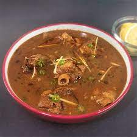

Halli Nihari

Nihari is a deliciously smooth flour based stew with slow cooked mutton and a myriad of spices.
This mutton Nihari recipe takes around 4 hours to cook, but doesn't require much cooking skill.
To get the best flavour, the mutton is traditionally slow cooked for multiple hours.
Just like garam masala, Nihari masala is a mix of whole aromatic spices.
The whole spices like cardamom, fennel, cloves, nutmeg, dry ginger etc are roasted and then grounded to a powder.
The masala mix is best when prepared fresh but you can make it larger quantities and store in an airtight container.
The homemade nihari masala keeps well for up to 6 months and can be used to cook other dishes as well.
Ingredients
- Mutton
- Ghee
- Onions
- Ginger
- Garlic
- Coriander Powder
- Tumeric
- Wheat Flour
- Cumin
- Fennel
- Cardamom
- Cloves
- Bay Leaf
- Cinnamon Stick
- Nutmeg
- Black Peppercorns
- Lime Juice
- Coriander
Steps
- To make your own Nihari masala from scratch, dry roast all the whole spices for the masala; cool; and grind them to a fine powder.
- Cook the sliced onions in heated ghee in a large pan/pot.
- Add mutton pieces, graded ginger, graded garlic, coriander powder, turmeric and salt. Mix well to coat the mutton in ghee and spices. Sauté for 5 mins.
- Add the nihari masala and 8 cups of water. Mix well, cover and cook on very low heat for about 4 hours until the meat is tender. Keep checking in between. The way to know that the meat is cooked is when it breaks easily with a wooden spoon.
- Dissolve wheat flour in half cup of water such that there are no lumps. Slowly add it to the gravy. Stir to mix it well in the gravy and let it simmer for another 10-15 mins till the gravy thickens.
- Sprinkle some lime juice and garnish with ginger strips and fresh coriander leaves. Serve hot.
Credit